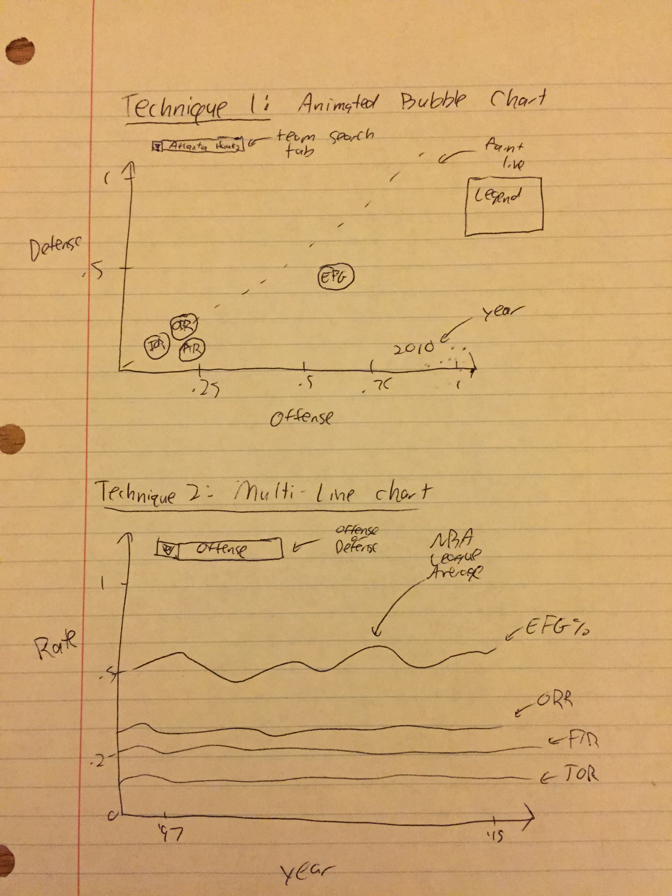

Planned Tools: I've already used python to scrape and preprocess my data. The only thing I may have left to do is to create another dataset which is the league averages for each statistic across every year (it may be easier for me to do that in python than to do it in D3). For my visualizations I plan on using standardized Javascript libraries for my project, as everything I plan on doing has been done before for previous homeworks.
Planned Techniques: I will be using 3 techniques, which are sketched out (or on Tableau) below: an animated bubble chart, a multi-line chart and two bar charts. For my animated bubble chart, the goal is to look at particular team statistics, offense vs defense (since each Four Factor stat has an offensive and defensive component), for each season. I will have a search tab which includes each team, and the size of the bubbles will correspond to the number of wins that team had in that season. Each bubble color will correspond to its associated statistic, and I'll include a legend. My multi-line chart will be a simple line chart which will identify league-wide trends across each stat. I'll take the NBA league average for each stat across all 19 years and plot them as line charts. I will also have a tab here to specify offense or defense.

These next two bar charts are plots that I came up with while working on a side project, that I'd love to implement in D3. They come from another dataset, which I've uploaded to github, which are results from my linear regression model on the Four Factors data. This dataset contains the actual wins vs expected wins (based on the results of my model) for each team in the 2014-15 season. I tried implementing these in D3 originally but got stuck on negative bar charts, so that will be a challenge moving forward.


Planned Interaction: I plan to have a tooltip for each chart as well as a search tab for the first two techniques. I currently don't see the need for any more advanced interactions, but I may change my mind as I move forward with this project.
Planned Interface: My interface will look similar to the charts above. I'll probably keep them in vertical order, with descriptions of each chart and the data that went into them.